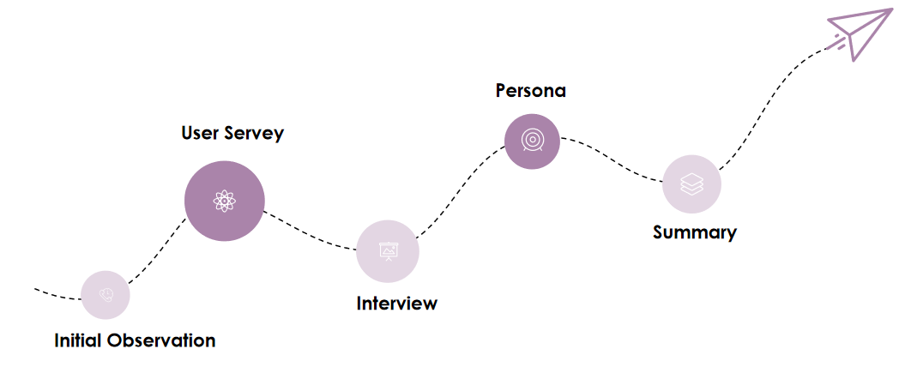

Part 1: User Servey
We used first one week to design survey questions and collect feedback. Except for the main
function (recording and tracking), actually we didn’t have specific goals in mind. Survey is
a simple and cheap way to get an initial understanding of what the user is thinking.
14
questions
355
respondents
204
women
151
men
Most female applicants are young girls and mothers. Due to the fixed deadline, our team
mainly performed analysis on these two user groups.
Male Users
Under the assumption that men will have or already have female lovers, more than 60% of men of
any age think that considering male demands is needed. Interestingly, single man lowered the
proportion. Overall, for men, as they get older, they start to have their own families and tend
to care for women.
Most concerned issues during periods
The most concerned issues help us to understand users’ needs and design the layout of period
recording page.

Paid subscription services
All 103 applicants who don’t think the app needs to consider man’s needs are not willing to buy
paid content.